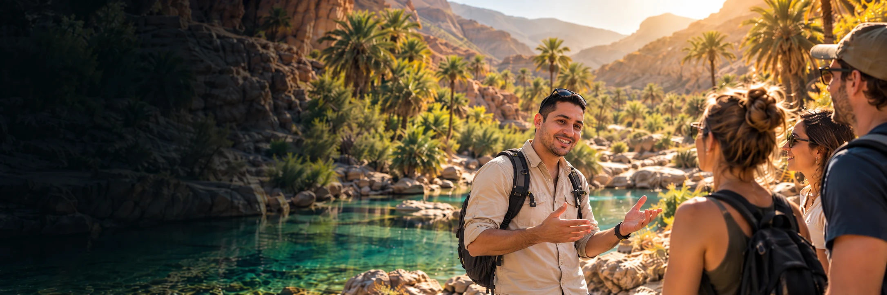

Every way to see
Agadir.
19 tours and day trips with local guides, from desert dunes and mountain pools to the Atlantic coast.
Find your Agadir experience.
19 experiences
 MOST POPULAR
MOST POPULARParadise Valley Tour
Swim in natural pools and walk through a palm-filled mountain gorge.
 ADVENTURE
ADVENTUREQuad Biking in Timlaline
Beginner-friendly guided quad ride across sandy trails and open tracks.
 HIDDEN GEM
HIDDEN GEMTimlaline Experience
Taghazout, colorful Aghroud, sandboarding and canyon views in one trip.
 SUNSET & DINNER
SUNSET & DINNERQuad, Camel & BBQ in Timlaline
One hour of quad, one hour of camel, then a Moroccan BBQ at Ranch Tamri.
 OFF-ROAD
OFF-ROADBuggy Adventure
Drive a powerful buggy through desert tracks and Berber villages.
 DESERT
DESERTSandboarding Sahara Dunes
Slide down golden dunes, visit a Berber village and share a BBQ dinner.
 SUNSET FAVORITE
SUNSET FAVORITESunset Camel Ride
An evening camel ride along the coast, with a BBQ dinner included.
 BEST VALUE
BEST VALUEMorning Camel Ride
A calm morning ride through the Timlaline dunes with mint tea.
 SCENIC
SCENICBeach Horse Riding
Ride along the Atlantic coast and finish with tea at Ranch Tamri.
 WILDLIFE
WILDLIFESouss Massa National Park
A quiet guided trip for flamingos, bald ibis habitat and coastal lagoons.
 DAY TRIP
DAY TRIPMarrakech Day Trip
Discover the red city's souks, palaces and Jemaa el-Fna square.
 COASTAL TOWN
COASTAL TOWNEssaouira Day Trip
Walk the medina, ramparts and harbor of Morocco's blue and white town.
 LITTLE MARRAKECH
LITTLE MARRAKECHTaroudant Day Trip
Ancient city walls, local souks and an argan oil cooperative visit.
 BEGINNER FRIENDLY
BEGINNER FRIENDLYSurf Lesson in Taghazout
A beginner surf lesson with an instructor, board, wetsuit and transport.
 THRILL
THRILLJet Ski Agadir
A fast 30-minute ride on the Atlantic with safety gear and a briefing.
 ON THE WATER
ON THE WATERHalf Day Boat Trip
Cruise the bay, look out for dolphins and enjoy lunch on board.
 LOCAL CULTURE
LOCAL CULTUREAgadir City Tour & Cable Car
The cable car, Kasbah, Souk El Had and marina in one easy half day.
 HANDS-ON
HANDS-ONMoroccan Cooking Class
Shop for ingredients, cook a tagine and share the meal you made.
 RELAX
RELAXTraditional Hammam
A steam bath, black soap scrub and argan oil massage.
Not sure which tour fits your day?
Tell us your dates, where you are staying and what you enjoy. We’ll suggest the right tour and confirm pickup.
Your Agadir adventure in 3 simple steps.
Choose your tour
Browse our tours and find your perfect experience.
Book easily
Contact us on WhatsApp and confirm the details.
Enjoy the adventure
We’ll pick you up and take care of the rest.

Your Agadir adventure
starts here.
Explore tours on WhatsApp Free cancellation · Book with confidence